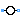
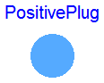
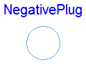
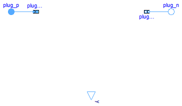
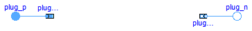

| Name | Description |
|---|---|
| Basic multiphase plug | |
| PositivePlug | Positive multiphase connector |
| NegativePlug | Negative multiphase connector |
| Two plugs with pin-adapter | |
| AbsoluteSensor | Partial potential sensor |
| Partial voltage / current sensor | |
|  Source | Partial voltage / current source |
This multiphase plug contains a vector of m single phase pins. The positive and negative plug are derived from this base connector.
Pin, PositivePin, NegativePin, PositivePlug, NegativePlug
| Type | Name | Default | Description |
|---|---|---|---|
| Integer | m | 3 | number of phases |
| Type | Name | Description |
|---|---|---|
| Integer | m | number of phases |
| Pin | pin[m] |
connector Plug "Basic multiphase plug" parameter Integer m=3 "number of phases"; QuasiStationary.SinglePhase.Interfaces.Pin pin[m];end Plug;

The positive plug is based on Plug. Additionally the reference angle is specified in the connector. The time derivative of the reference angle is the actual angluar velocity of each quasi stationary voltage and current. The symbol is also designed such way to look different than the negative plug.
Pin, PositivePin, NegativePin, Plug, NegativePlug
Extends from Plug (Basic multiphase plug).
| Type | Name | Default | Description |
|---|---|---|---|
| Integer | m | 3 | number of phases |
| Type | Name | Description |
|---|---|---|
| Integer | m | number of phases |
| Pin | pin[m] | |
| Reference | reference |
connector PositivePlug "Positive multiphase connector" extends Plug; QuasiStationary.Types.Reference reference;end PositivePlug;

The negative plug is based on Plug. Additionally the reference angle is specified in the connector. The time derivative of the reference angle is the actual angluar velocity of each quasi stationary voltage and current. The symbol is also designed such way to look different than the positive plug.
Pin, PositivePin, NegativePin, Plug, PositivePlug,
Extends from Plug (Basic multiphase plug).
| Type | Name | Default | Description |
|---|---|---|---|
| Integer | m | 3 | number of phases |
| Type | Name | Description |
|---|---|---|
| Integer | m | number of phases |
| Pin | pin[m] | |
| Reference | reference |
connector NegativePlug "Negative multiphase connector" extends Plug; QuasiStationary.Types.Reference reference;end NegativePlug;
 Modelica.Electrical.QuasiStationary.MultiPhase.Interfaces.TwoPlug
Modelica.Electrical.QuasiStationary.MultiPhase.Interfaces.TwoPlug

This partial model uses a positive and negative plug and defines the complex voltage differences as well as the complex currents (into the positive plug). A positive and a negative adapter are used to give easy acces to the single pins of both plugs. Additionally, the angular velocity of the quasi stationary system is explicitely defined as variable. This model is mainly intended to be used with graphical representation of user models.
| Type | Name | Default | Description |
|---|---|---|---|
| Integer | m | 3 | Number of phases |
| Type | Name | Description |
|---|---|---|
| PositivePlug | plug_p | |
| NegativePlug | plug_n |
partial model TwoPlug "Two plugs with pin-adapter"
parameter Integer m(min=1) = 3 "Number of phases";
Modelica.SIunits.ComplexVoltage v[
m];
Modelica.SIunits.ComplexCurrent i[
m];
Modelica.SIunits.AngularVelocity omega = der(plug_p.reference.gamma);
PositivePlug plug_p(final m=m);
NegativePlug plug_n(final m=m);
Basic.PlugToPins_p plugToPins_p(final m=m);
Basic.PlugToPins_n plugToPins_n(final m=m);
equation
v = plug_p.pin.v - plug_n.pin.v;
i = plug_p.pin.i;
connect(plug_p, plugToPins_p.plug_p);
connect(plugToPins_n.plug_n, plug_n);
end TwoPlug;
Modelica.Electrical.QuasiStationary.MultiPhase.Interfaces.OnePort
| Type | Name | Default | Description |
|---|---|---|---|
| Integer | m | 3 | Number of phases |
| Type | Name | Description |
|---|---|---|
| PositivePlug | plug_p | |
| NegativePlug | plug_n |
partial model OnePort
parameter Integer m(min=1) = 3 "Number of phases";
Modelica.SIunits.ComplexVoltage v[
m];
Modelica.SIunits.ComplexCurrent i[
m];
Modelica.SIunits.AngularVelocity omega = der(plug_p.reference.gamma);
PositivePlug plug_p(final m=m);
NegativePlug plug_n(final m=m);
equation
Connections.branch(plug_p.reference, plug_n.reference);
plug_p.reference.gamma = plug_n.reference.gamma;
v = plug_p.pin.v - plug_n.pin.v;
i = plug_p.pin.i;
plug_p.pin.i + plug_n.pin.i = fill(Complex(0),m);
end OnePort;
The absolute sensor partial model relies on the a positive plug to measure the complex potential. Additionally this model contains a proper icon and a definition of the angular velocity.
RelativeSensor, SinglePhase.Interfaces.AbsoluteSensor, SinglePhase.Interfaces.RelativeSensor
Extends from Modelica.Icons.RotationalSensor (Icon representing a round measurement device).
| Type | Name | Default | Description |
|---|---|---|---|
| Integer | m | 3 | number of phases |
| Type | Name | Description |
|---|---|---|
| PositivePlug | plug_p |
partial model AbsoluteSensor "Partial potential sensor" extends Modelica.Icons.RotationalSensor; parameter Integer m(min=1) = 3 "number of phases"; Modelica.SIunits.AngularVelocity omega = der(plug_p.reference.gamma);PositivePlug plug_p(final m=m); end AbsoluteSensor;

The relative sensor partial model relies on the TwoPlug to measure the complex voltages, currents or power. Additionally this model contains a proper icon and a definition of the angular velocity.
AbsoluteSensor, SinglePhase.Interfaces.AbsoluteSensor, SinglePhase.Interfaces.RelativeSensor
Extends from Modelica.Icons.RotationalSensor (Icon representing a round measurement device), TwoPlug (Two plugs with pin-adapter).
| Type | Name | Default | Description |
|---|---|---|---|
| Integer | m | 3 | Number of phases |
| Type | Name | Description |
|---|---|---|
| PositivePlug | plug_p | |
| NegativePlug | plug_n | |
| output ComplexOutput | y[m] |
partial model RelativeSensor "Partial voltage / current sensor" extends Modelica.Icons.RotationalSensor; extends TwoPlug;Modelica.ComplexBlocks.Interfaces.ComplexOutput y[m]; end RelativeSensor;

The source partial model relies on the TwoPlug and contains a proper icon.
VoltageSource, VariableVoltageSource, CurrentSource, VariableCurrentSource, SinglePhase.Interfaces.Source.
Extends from TwoPlug (Two plugs with pin-adapter).
| Type | Name | Default | Description |
|---|---|---|---|
| Integer | m | 3 | Number of phases |
| Type | Name | Description |
|---|---|---|
| PositivePlug | plug_p | |
| NegativePlug | plug_n |
partial model Source "Partial voltage / current source" extends TwoPlug; constant Modelica.SIunits.Angle pi=Modelica.Constants.pi;end Source;